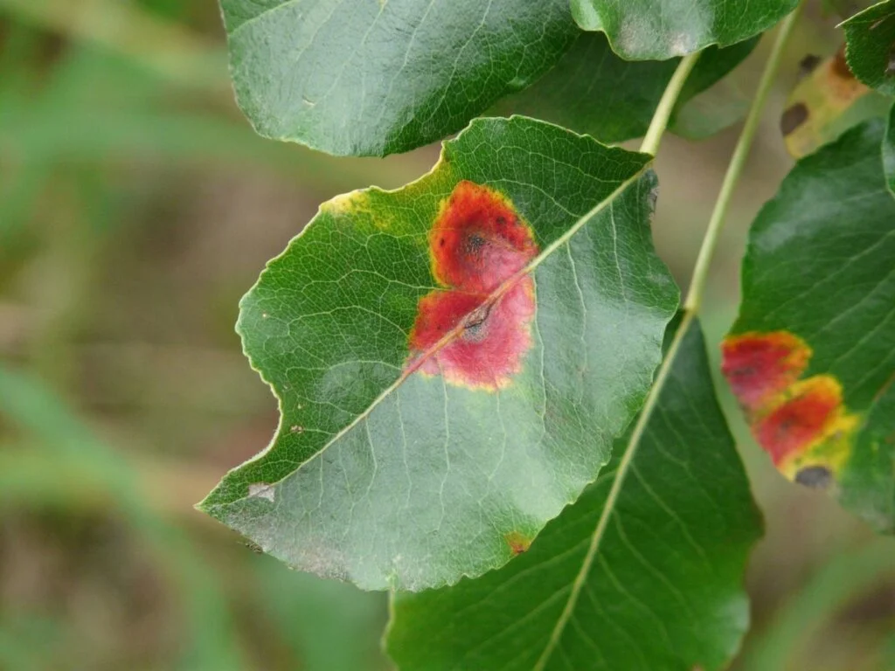

HOME
BLOGS
FÓRUNS
MEMBROS
SOBRE
CONTATO
Conecta Campo
Um site sobre jardinagem.
Explorar Espécies
Entrar na Comunidade
Blog dos Cultivadores
Plantas de Interior: Como Escolher e Cuidar das Melhores Espécies
As Melhores Plantas para Ambientes com Pouca Luz
Como Identificar e Tratar Pragas Comuns em Plantas Domésticas

Os Melhores Tipos de Solo e Adubo para Hortas Urbanas